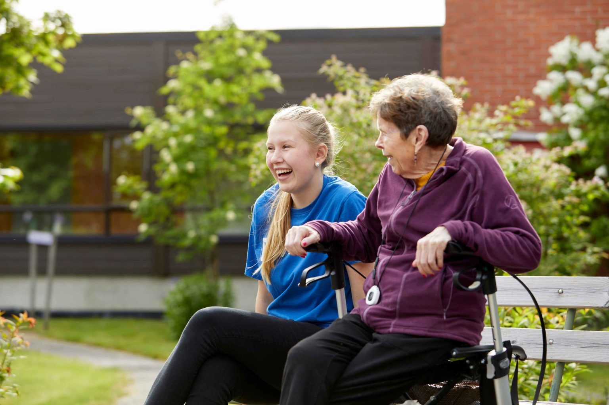

Rådgivning, strategi & virksomhetsstyring · Larvik
Om Kobro Rådgivning & Analyse
Blogger, kommentarer og artikler – både egne og andres – for å dele kunnskap og synliggjøre nye perspektiver.
Kobro Rådgivning & Analyse bistår kunder i Larvik med fagmessige leveranser innen strategi, analyse og forretningsutvikling, leder-, team- og organisasjonsutvikling, etterlevelse, styring og internkontroll og prosjektledelse og endringsstøtte.
En plan har først verdi når den fungerer i hverdagen – derfor jobber vi tett med menneskene som skal gjennomføre den. Vi gir tydelige, faglig funderte anbefalinger basert på fakta og erfaring, ikke standardmaler.
Hver organisasjon har sin kultur og sine rammevilkår. Vi tilpasser metodikk og omfang deretter. Målet vårt er alltid at virksomheten skal stå sterkere og mer selvgående tilbake etter endt oppdrag.
«Kloke beslutninger og strukturert gjennomføring som flytter virksomheten fremover.»

Vil du vite mer om hvordan vi kan hjelpe deg?
Ta kontakt for en uforpliktende samtale med våre fagfolk.
Ta kontakt